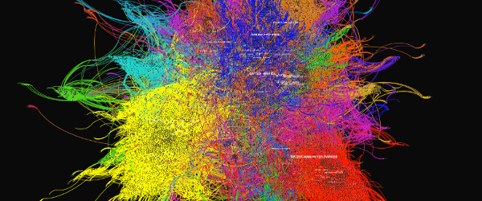
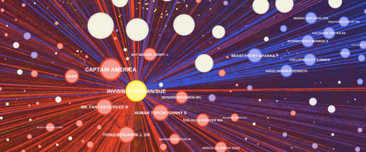
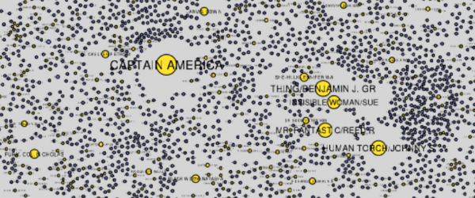
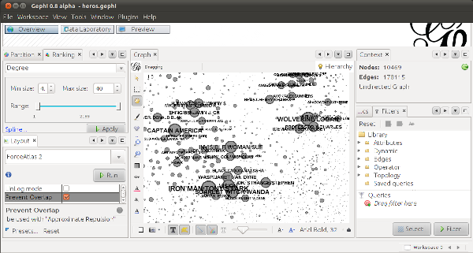

Marvel Universe Social Graph
  Created by Kai Chang, Tom Turner, and Jefferson Braswell
Production Notes
{kind=link}
These graphs were produced for the Data Insight 2011 competition at Adobe in San Francisco using data from Infochimps. The data was transformed to optimize importing into Gephi, a powerful graph visualization packages for Linux, OS X and Windows. You can find both the source and transformed data at the bottom of this page, as well as the Gephi source files used to generate the images.
One dataset (Comic and Hero) connects Marvel characters with comic issues they appeared in. This dataset was ideal for accurate community detection. A second dataset (Hero Social Network) contained only connections between characters, weighted by number of common appearances in comics.
In Gephi, we made use of the Force Atlas 2 layout algorithm to cluster related nodes. Node sizes are based on degree of connection. Colors either corresponded to node type (comic or hero), or community detected using the modularity class statistic. Ego graphs were created using Gephi's filters.
Datasets and Gephi Files
To build on the visualizations above, you'll need Gephi and your choice of the following files:
- Comic and Hero Network (gephi)
- Marvel Social Network (gephi)
- Comic and Hero Network Data (gdf guess)
- Hero Social Network Data (csv)
- Cleaned source file (csv) from Infochimp's Marvel Universe Social Graph Data (tsv)

All datasets, images and techniques released under the
Creative Commons Attribution 3.0 Unported License